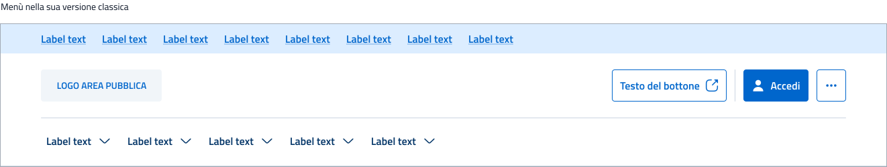

MIT Portale delle linee guida UX
Accessibilità
Qui puoi trovare le nostre linee guida per una progettazione accessibile che migliori l'usabilità, promuova l'inclusione e potenzi l'esperienza utente

Introduzione
Un design accessibile non solo agevola gli utenti con disabilità, ma migliora l'esperienza utente per tutti. Per questo motivo, il Design system sviluppato per il Ministero dei Trasporti e delle Infrastrutture si impegna a seguire e rispettare le migliori pratiche di accessibilità, garantendo a tutti gli utenti un'esperienza di alta qualità senza discriminazioni.
L'accessibilità web si basa sulle linee guida pubblicate dal World Wide Web Consortium (W3C) per i contenuti accessibili, conosciute come “Linee guida per l'accessibilità dei contenuti web” o WCAG.
Principi che guidano l’accessibilità web
Per garantire l'accessibilità web per tutti, il World Wide Web Consortium (W3C) ha stabilito quattro principi fondamentali che devono essere seguiti nella progettazione e nello sviluppo di applicazioni web.
Il team che ha creato il Design system per il Ministero dei Trasporti e delle Infrastrutture ha adottato e applicato fin dall'inizio questi principi in tutte le componenti realizzate.
Tipologie di utenti
Di seguito è riportato un elenco delle diverse tipologie di utenti che potrebbero utilizzare la nostra pagina, insieme a consigli su come offrire loro la migliore esperienza possibile. Questi accorgimenti non solo migliorano l'accessibilità per gli utenti specifici, ma arricchiscono l'esperienza complessiva per tutti.
|
Utente
|
Come sperimentano l’interfaccia
|
Come progettare al meglio
|
Come si applica a tutti
|
|---|---|---|---|
|
Utente con ipovisione
|
Utilizzano lettori di schermo, ingranditori di schermo,
modalità ad alto contrasto e/o display monocromatici
|
Massimizzare la leggibilità e la chiarezza visiva del
contenuto. Considerare come cambia la relativa vicinanza
delle informazioni quando una pagina viene ingrandita.
Seguire le linee guida per una corretta navigazione da
tastiera per assicurarsi che lo screen reader legga la
pagina all'utente in ordine logico.
|
La visione peggiora gradualmente a partire dall'età di 40
anni e un buon contrasto aiuta questo gruppo demografico
molto grande a utilizzare l’interfaccia.
|
|
Utente non vedente
|
Fanno affidamento su screen reader per sperimentare le
interfacce
|
Quando possibile, prova tutti i progetti attraverso uno
screen reader
|
Le interfacce audio-only guadagnano popolarità attraverso
dispositivi come gli assistenti AI
|
|
Utente sordo
|
Fanno affidamento su sottotitoli e altre rappresentazioni
alternative all'audio
|
Evitare di trasmettere informazioni solo con il suono
Trascrivere tramite sottotitoli tutti i video e le
animazioni che hanno un audio significativo.
|
Tutti gli utenti possono beneficiare dei sottotitoli:
immagina usare il dispositivo in un ambiente rumoroso o in
un ambiente tranquillo quando non sarebbe appropriato
accendere l’audio
|
|
Utente con disabilità fisiche
|
Fanno affidamento a tastiere, palline, riconoscimento
vocale e altre tecnologie assistive per interagire con
un'interfaccia
|
Progettare per l'interazione da tastiera
|
Molti utenti preferiscono navigare le interfacce con una
tastiera e senza mouse per maggior efficienza
|
|
Utente con disabilità cognitive
|
Possono verificarsi convulsioni se esposto a contenuti
lampeggianti a causa dell'epilessia Possono avere una
memoria di lavoro limitata e aver bisogno di informazioni
per rimanere visibili durante il completamento di
un'attività
|
Evitare un linguaggio complesso Evitare la riproduzione
automatica di animazioni e video e animazioni lampeggianti
Progetta nel modo più lineare possibile concentrandosi
sull'euristica del design che ha a che fare con il carico
cognitivo e la memoria
|
Mettere un basso carico cognitivo sugli utenti riduce gli
errori e migliora l'efficacia, indipendentemente dalle
loro capacità e dall’età
|
|
Utente con ipovisione
|
Utilizzano lettori di schermo, ingranditori di schermo,
modalità ad alto contrasto e/o display monocromatici
|
Massimizzare la leggibilità e la chiarezza visiva del
contenuto. Considerare come cambia la relativa vicinanza
delle informazioni quando una pagina viene ingrandita.
Seguire le linee guida per una corretta navigazione da
tastiera per assicurarsi che lo screen reader legga la
pagina all'utente in ordine logico.
|
La visione peggiora gradualmente a partire dall'età di 40
anni e un buon contrasto aiuta questo gruppo demografico
molto grande a utilizzare l’interfaccia.
|
Contrasto colore
In conformità con le linee guida WCAG definite dal W3C ti consigliamo di garantire i contrasti elencati di seguito al fine di consentire a tutti gli utenti, indipendentemente dalle loro condizioni, di fruire agevolmente dei contenuti.
|
Tipologia di elemento
|
Come sperimentano l’interfaccia
|
|---|---|
|
Testo standard
|
4.5:1 (livello AA - W3C)
|
|
Testo grande Testo grande
(18px in sù)
|
3:1
|
|
Componenti dell’interfaccia utente
(immagini, componenti, sezioni, ecc) |
4.5:1 (livello AA - W3C)
|
Questi livelli di contrasto non vengono richiesti per: elementi inattivi, testi decorativi, illustrazioni ed immagine decorative e per i logotipi.
Esempio valori di contrasto: icona su sfondo


Esempio valori di contrasto: testo su sfondo


Uso del colore e daltonismo
Quando si progetta, è importante non fare affidamento esclusivamente sul colore per trasmettere significato, poiché circa l'8% della popolazione maschile e lo 0,4% della popolazione femminile soffre di disturbi visivi legati alla percezione del colore. Per garantire che i contenuti siano comprensibili a tutti è consigliato utilizzare un simulatore per daltonismo che permetta di verificare la visibilità dei contenuti e assicurarsi così che essi siano chiari anche senza il supporto del colore.
Se stai lavorando con Figma, ti consigliamo di utilizzare il plugin Stark.

Visione normale

Protanopia (Cecità al rosso)

Deuteranopia (Cecità al verde)

Tritanopia (Cecità al giallo)

Monocromia
Immagini
Esistono due tipologie di immagini che è possibile utilizzare all’interno dei tuoi progetti: informative e decorative.
Immagini informative
Sono tutte le immagini che trasmettono informazioni importanti
e comunicano visivamente concetti e informazioni.
Pertanto:
- Il testo alternativo deve veicolare le stesse informazioni contenute nell'immagine;
- Assicurati che il testo alternativo sia breve e appropriato al contesto;
- Se le stesse informazioni sono già presenti come testo sullo schermo, l'immagine può essere considerata decorativa.


Immagini informative
Si tratta di immagini che non trasmettono informazioni. Sono ad esempio i bordi, gli stati vuoti, le immagini di ambiente e di sfondo. Queste ultime:
- dovrebbero essere ignorate dallo screen reader;
- possono essere definite come immagine di sfondo nel foglio di stile;
- dovrebbero utilizzare l'attributo “Role="presentation" .


Come rendere accessibile un’immagine
La migliore modalità per fornire una descrizione testuale alle
immagini è certamente quella di utilizzare l'attributo
<alt>
(una stringa testuale che serve a descrivere un’immagine a
fonti “alternative” e ad assicurare la massima accessibilità
delle risorse) sull'elemento
<img> (l’immagine). A questo punto, il
testo risulterà fruibile tramite le Assistive
Technologies (AT): screen readers e voice assistants (come per
esempio Siri o Assistente Google).
Risulta dunque molto importante conoscere lo scopo ed il senso dell'immagine, per fornire la miglior descrizione testuale possibile
- Immagini cliccabili. Se l'immagine risulta essere un pulsante verso altre pagine, l’alt text dovrebbe descrivere la destinazione del link piuttosto che l’immagine stessa.
- Immagini informative. Per immagini complesse che contengono molte informazioni, come le infografiche, può essere utile fornire un’alt text che riassuma i punti chiave e se possibile fornire un testo equivalente dettagliato altrove nella pagina o tramite un link a una descrizione completa. Icone. Per le icone l’alt text dovrebbe comunicare la funzione dell’icona, non la sua descrizione visiva.
- Immagini decorative. Per immagini che sono utilizzate per scopo di interazione o design, che producono atmosfera e mirano a creare una particolare emozione nell'utente, la descrizione dovrebbe puntare a produrre lo stesso tipo di emozione, per permettere agli utenti con disabilità di provare le stesse sensazioni.
Scrivere un < alt> efficace
- Brevità. Un testo alternativo lungo può infastidire gli utenti di screen reader, quindi è meglio usare il minor numero di parole possibile per descrivere l’immagine. Idealmente, l’alt text dovrebbe essere breve (circa 125 caratteri) per assicurare che i lettori di schermo lo leggano per intero senza tagli.
- Precisione. Il testo deve fornire una descrizione chiara e concisa di ciò che è raffigurato. Ad esempio, invece di “pesci”, un alt text ottimizzato potrebbe essere “pesci rossi che nuotano in un acquario”.
- Chiarezza. È importante includere parole chiave pertinenti, inserite in modo naturale e solo se rilevanti per l’immagine.
- Evitare la ridondanza. Gli screen reader comprendono che la risorsa è una immagine: non c’è quindi bisogno di scrivere “immagine di” o “foto di” nell’alt text.
Navigazione tramite tastiera
Le interazioni da tastiera più comuni avvengono nel seguente ordine:
- uso del tasto tabulazione per selezionare i diversi elementi interattivi in una pagina
- uso del tasto invio o della barra spaziatrice per attivare un elemento a fuoco.
Per questo motivo, quando si progetta per la navigazione da tastiera, è bene tenere in mente le seguenti raccomandazioni:
- tutti gli elementi attivi che possono essere attivati con il mouse devono essere utilizzabili tramite tastiera o avere un equivalente da tastiera;
- la pagina deve essere struttura secondo una gerarchia ben definita;
- anche i componenti dinamici devono essere attivati dalla tastiera;
- gli elementi che mostrano il contenuto al passaggio del mouse devono essere aggiunti all'ordine di tabulazione ed essere utilizzabili con la tastiera;
- è necessario annotare l'ordine di tabulazione e numerare i punti di tabulazione.
Indicatori di messa a fuoco
Il tasto tabulazione consente di navigare tra tutti gli elementi interattivi di una pagina nell'ordine in cui appaiono nel documento HTML. Nel caso del MIT quando un elemento verrà selezionato si attiverà uno stroke di 4px di colore Blu/300 attorno allo stesso. Solamente dopo che un elemento è focalizzato potrà poi essere ulteriormente attivato tramite la tastiera.
Accordion/Desktop
Stato default
Stato di focus
Ordine di navigazione
Per garantire la corretta lettura dei contenuti l’ordine in cui gli elementi interattivi ricevono l'attenzione dovrebbe essere logico e prevedibile. Ti raccomandiamo quindi di:
- creare la gerarchia del flusso di schede utilizzando il codice sorgente per organizzare la navigazione da tastiera;
- rafforzare l'HTML semantico per trasmettere intento e significato invece di definire esclusivamente l'aspetto di un elemento;
- migliorare l’HTML con le etichette ARIA (Accessible Rich Internet Application) quando necessario.
Menù nella sua versione classica
Processo che segue lo screen reader nella lettura dell’elemento

Punti di riferimento nella navigazione
Al fine di favorire una corretta lettura della pagina per tutti quegli utenti che utilizzano la navigazione da tastiera assicurati di comunicare le diverse aree dello schermo e cosa fanno con i punti di riferimento utilizzando le etichette HTML5, così che gli utenti di screen reader possano saltare rapidamente in qualsiasi area vogliano.
HTML semantico
L’HTML semantico, conosciuto anche con il nome di markup semantico, prevede l'uso di tag HTML che trasmettono il significato del loro stesso contenuto, come titoli, navigazione, sezioni di pagina, elenchi e paragrafi.
Per esempio, possiamo trovare i seguenti tag:
Per favorire una corretta interpretazione degli header, è necessario seguire queste indicazioni sia in fase di design che di sviluppo:
- organizzare le intestazioni della pagina in base al loro livello (H1, H2, H3, ecc.);
- l'intestazione più importante della pagina è di livello H1;
- in una pagina è consentita una sola intestazione di livello H1;
- i titoli devono essere posizionati all'inizio di nuove sezioni di contenuto, non a scopo decorativo.